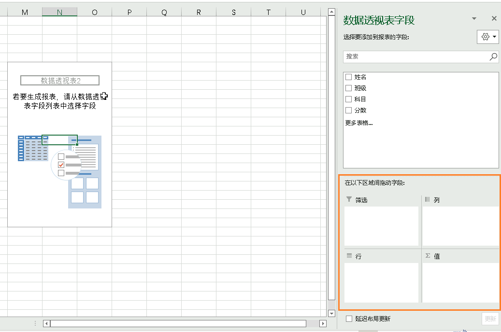

数据透视表
前置知识：
- 熟悉Excel基本操作
- 理解基本的二维表结构及相关术语
背景介绍
电子数据表格，常常有多种数据模式
需要一种能够建立多种数据模式的工具，基于该想法产生的工具，就是数据透视表
使用场景
有大量的数据，使用函数计算慢、繁琐
希望快速制作、整理、分析各类报表
数据源经常变化，并且要经常分析和处理最新的数据
想快速洞察数据背后隐藏的意义
数据透视表创建与使用
创建
默认数据透视表
选中数据源任意位置，插入 → 数据透视表
会自动将全表作为数据源，也可以手动选择部分区域

数据透视表缩略图上右键，可以设置相关属性

可以设置显示，将其显示为旧版本视图

旧视图可以将字段直接拖拽到某个区域，但会出现拖错的情况，建议还是使用新版本视图，在指定区间内拖拽字段：
一般会将字符串数据，放在筛选、列或者行区域（维度），数值类放在数值区域（指标）
但不是绝对的，可以把字段放在任意四个区域
单页字段透视表
背景：一共有三个工作簿，存在三年的不同车辆型号的销售情况
快捷键：Alt + D + P
缺点：合并后的字段默认用项1这种命名，不容易区分
自定义数据透视表
快捷键：Alt + D + P
基本使用
单字段查询
想知道某一列的取值都是多少
想要知道有多少品牌？有多少学科？
不知道数据透视表：筛选，去一个一个数或者导出筛选结果
数据透视表：将目标字段（如学科），拉入行区域
- 对应分组操作
如果将同样的字段，再拉入值区域，则会对该字段进行运算（默认是进行计数）
- 对应分组计数操作
关联查询
想知道每门学科的总分是多少？
将科目字段拖动到行，分数字段拖动到值。
结果会按科目进行分组，对分数进行默认求和。
- 如果分数列中，含有一个、多个空行或文本型的数值，则按字符串处理，进行计数，可以手动改为求和
- 可以手动补0，如果觉得0难看，可以自定义单元格格式

即对分数按照科目进行分组求和
- 对应分组求和操作
也可以进行其他运算，如求平均等

数据透视表组成结构
数据源
数据源，是创建数据透视表的基础
可能在当前工作表里，也有可能在不同的工作表、工作簿，甚至是外部文件、数据库文件
- 连接外部Excel文件
- 连接Access文件
项 item
数据源中的每一个维度值，叫做项，就是字段值
将维度拖动到行，就是让该维度中的每一项，各占据一行
将维度拖动到列， 就是让该维度中的每一列，各占据一列
区域
报表筛选区域
背景：从一张大表里，筛选出不同的子表进行处理
根据筛选项进行分页：数据透视表分析 → 选项 → 显示报表筛选页

不用一个一个筛选复制

行区域
将一个字段放在列标签里，相当于按照该字段进行分组
将多个字段放在列标签里， 相当于按照一个字段进行分组后，接着第二个字段进行更详细的分组
排列在上面的字段，称为父字段项；排列在下面的字段，称为子字段项
列区域
最终要查询的维度，配合行区域，展示列字段下的每个行字段的分组情况
如果拖动两个数值类型的，但没有竖直排列却水平排列了，可以右键值→将值移动到→移动值列
也可以将行区域的数值，移动到列区域
如下，如果要删除求和项三个字，需要在前面再加个空格，否则会提示有重复字段

值区域
注意可以重复拖到同一个字段到值区域
延迟布局更新
当数据量很大，或者引入了很多外部数据时
当我们基于这样的数据源构建数据透视表时，可以延迟布局更新，避免时刻占用大量的数据资源

数据透视表原理
当创建好数据透视表时，Excel会将数据源数据，复制一份到数据透视表缓存中。
面向数据透视表缓存操作，这比自己复制一份副本操作，方便的多
多字段布局
以汽车销售为例，想要知道不同地区下，不同品牌、不同城市的销量是多少？
查询涉及到三个指标
排序在上面的字段，统筹排在下面的字段
具体如何排列，取决于业务实际想要表现的内容，来决定报表输出格式
但有几点是确定的
- 必须明确报表需要什么字段
- 必须明确字段是放在列标签里，还是行标签里

菜单栏
数据透视表分析_菜单栏
可以创建数据表后，自行熟悉每个功能区

活动字段
字段设置
- 值显示方式：对于每一列的值进行对照处理
- 总计的百分比：计算项占总计的百分比
- 百分比：项与项之间的对照比较
- 父行汇总百分比：每个数值项占该
- 差值：项的差值比较
- 按某一字段汇总（累计求和）
- 升序排列
- 降序排列
- 多字段百分比显示
数据
修改数据后，点击刷新，数据透视表才会跟着改变
如果有新增行列，需要更改数据源，重新选择。我们不希望每次新增记录，都要重新选择数据源。可以将源数据设置为超级表（插入→表格），超级表会自动新增行，列入数据区域。（注意此时数据透视表的数据源，应该是一个整表的表名，而不是一个数据区域）
此后直接点击刷新，就能更新数据透视表视图了。
分组
日期分组
- 不能全选列来创建数据透视表
数值分组
- 对数据做区间统计
自定义分组
- 针对字符串进行分组
- 选择指定字段，进行分组
排序和筛选
自定义排序序列：文件→选项→高级，找到编辑自定义列表，自定义排序字段
然后排序时，选择其他排序选项
切片器：更加便捷的筛选，按住Shfit进行多选

计算
计算字段
利用现有字段进行计算，以产生新的字段
域、项目和集→计算字段
特性：是根据各个字段之和来进行计算的
局限性：类似单价、比率等字段，它也会求和。不能解决sumproduct的场景
计算项
光标不要放在值区域，放在行列区域
计算项不会在字段列表中显示，它只是创建了一个项
列出公式
当有很多计算字段和计算项时，为方便查看，可以使用列出公式
设计_菜单栏
报表布局
有三种布局，默认以压缩形式显示
建议以表格形式显示

分类汇总
可以调整是否显示每一组的分类汇总，以及对应显示的位置

空行
每个分组项目下，插入一个空行，使得看上去更加清爽

总计
是否对统计结果，启用行总计或者是列总计

数据透视图
数据透视图默认展示的是汇总项
拖动图表时，可以按住alt键让图表与单元格边线齐平
打印
分页、分项打印
重复打印行标签
- 右键，选择
数据透视表选项，选择打印
打印数据透视图
 wechat
wechat alipay
alipay